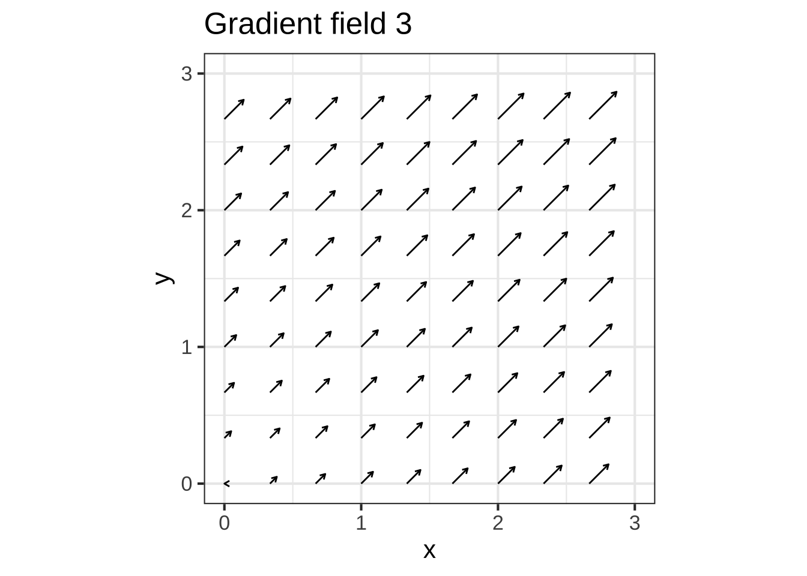

25 Approximation near a reference input
Back in Chapter 24 we considered eight simple shapes for functions of one input:


All these simple shapes can be generated with the same function formula and appropriate values for parameters \(a\), \(b\), and \(c\).
\[g(x) \equiv a_0 + a_1 x + a_2 x^2\] This chapter examines the possibilities for extending the formula a bit, to include higher-order terms, e.g. \[h(x) \equiv a_0 + a_1 x + a_2 x^2 + a_3 x^3 + a_4 x^4 + \cdots\]
We’ll consider two possible applications:
- Creating an arithmetically simple approximation to a function whose formula is already known. Such approximations are known as Taylor polynomials.
- Creating a function to capture the patterns in data, as in Chapter 24. It turns out that this is a dubious practice. We discuss the reasons why so that you can know to avoid using high-order polynomials to fit data.
 2915
2915
25.1 The reference point
Since this is all about approximations, we need to have a way to specify the neighborhood of the function domain in which the approximation is intended to be good enough for use. We can use the same approach that turned the pattern-book functions (e.g., \(x\), \(x^2\), …) into the basic modeling functions: replacing \(x\) in the polynomial with \(\line(x)\). But unlike the basic modeling functions, where the useful form of \(\line()\) was usually \(ax + b\), here, we’ll use just a shift form of line, where the slope is 1: 2920
\[\text{shift}(x) \equiv \left[\strut x - x_0\right]\]
The parameter \(x_0\) is called the reference point. For a power-law function, \[\left[\strut\text{shift}(x)\right]^n = \left[\strut x - x_0\right]^n\]
the output is always zero when \(x=x_0\), which will be a matter of considerable importance as we go on. Also, note that we’re using square braces \(\left[\ \ \right]\) simply to make it completely unambiguous what is being exponentiated. 2925
Exercise XX.XX: 682lsB
Here are graphs of three power-law functions (that is, \(\left[x-x_0\right]^n\)) with different values of \(x_0\):
Question A For the blue function, what is \(x_0\)?
-2 ︎✘ -1 ︎✘ 0 ︎✘ 1 ︎✘ 2 ︎✘ 3 ︎✘ 4 ✔︎ 5 ︎✘
Question B For the blue function, what is the order of the polynomial?
0 ︎✘ 1 ✔︎ 2 ︎✘ 3 ︎✘ 4 ︎✘ 5 ︎✘
Question C For the red function, what is \(x_0\)?
-2 ︎✘ -1 ︎✘ 0 ︎✘ 1 ︎✘ 2 ✔︎ 3 ︎✘ 4 ︎✘ 5 ︎✘
Question D For the red function, what is the order of the polynomial?
0 ︎✘ 1 ✔︎ 2 ︎✘ 3 ︎✘ 4 ︎✘ 5 ︎✘
Question E For the green function, what is \(x_0\)?
-2 ︎✘ -1 ︎✘ 0 ︎✘ 1 ︎✘ 2 ︎✘ 3 ︎✘ 4 ✔︎ 5 ︎✘
Question F For the green function, what is the order of the polynomial?
0 ︎✘ 1 ︎✘ 2 ︎✘ 3 ✔︎ 4 ︎✘ 5 ︎✘With the reference point \(x_0\) we will re-write the approximating polynomial as
\[h(x) \equiv a_0 + a_1 [x-x_0] + a_2 [x - x_0]^2 + a_3 [x - x_0]^3 + \cdots\]
This format is convenient because in finding the \(a_0\), \(a_1\), \(\ldots\) for approximating a function \(f(x)\) in the neighborhood of \(x_0\), we have a way to calculate quickly the value of \(a_0\). Note that at \(x=x_0\), all the terms in the polynomial go to zero except the first, so we know \(a_0 = f(x_0)\). 2930
Now consider the derivative of the approximating polynomial. This is \[\partial_x h(x) = a_1 + 2 \times a_2 [x-x_0] + 3 \times a_3 [x-x_0] + \cdots\] Again, at \(x=x_0\) all the terms except the first go to zero. So if \(h(x)\) is an approximation to \(f(x)\) we’ll have \(a_1 = \partial_x f(x_0)\).
We can do this as many times as we want. Here’s the second derivative \(\partial_{xx} h(x)\): \[\partial_{xx} h(x) = 2 a_2 + 2 \times 3 \times a_3 [x-x_0] + \cdots\] and the third \[\partial_{xxx} h(x) = 2 \times 3 \times a_3 + \cdots\]
As before, all the terms in \(\partial_{xx} h()\) and \(\partial_{xxx} h()\) except the first go to zero when \(x=x_0\). This implies \[a_2 = \frac{1}{2} \partial_{xx} f(x_0) \ \ \ \text{and}\ \ \ a_3 = \frac{1}{2\times 3} \partial_{xxx}f(x_0)\] Just following the pattern, we can guess that \(a_4 = \frac{1}{2 \times 3 \times 4} \partial_{xxxx} f(x_0)\) and, in general for the nth term \[a_n = \frac{1}{1\times 2 \times 3 \times \cdots \times n} \partial^n f(x_0)\] We’re writing \[{\huge \partial^n} \ \text{to stand for}\ \ \stackrel{\Huge \partial}{\ } \underbrace{xx...x}_\text{n times}\]
The quantity \(1\times 2 \times 3 \times \cdots \times n\) is called a factorial and written \[\huge n! = 1\times 2 \times 3 \times \cdots \times n\]
In case you’re not already familiar with factorials, note the following: \[1! = 1\\ 2! = 2\\ 3! = 6\\ 4! = 24\\ 5! = 120\\ \text{... and so on} \]
In R, use the factorial() function to calculate \(n!\) for instance:
factorial(5)## [1] 120
factorial(6)## [1] 720
factorial(7)## [1] 5040
factorial(10)## [1] 3628800
factorial(15)## [1] 1.3077e+1225.2 Taylor polynomials
Putting together everything in the previous sections, we arrive at a remarkable formula for a polynomial to approximate any smooth, continuous function \(f(x)\) in the neighborhood of a selected input \(x_0\). The overall formula is daunting at first glance, but each of the terms has the same pattern:
\[f(x) \approx f(x_0) + \frac{\partial_x f(x_0)}{1!} [x - x_0]^1
+ \frac{\partial_{xx} f(x_0)}{2!} [x - x_0]^2
+ \frac{\partial_{xxx} f(x_0)}{3!} [x - x_0]^3
+ \ldots
\]
This is the Taylor polynomial. A Taylor polynomial that terminates with the \([x-x_0]^2\) term is a second-order Taylor polynomial, one that terminates with the \([x-x_0]^3\) term is a third-order Taylor polynomial. Mathematicians are particularly interested in the \(n\)th-order Taylor polynomial where \(n \rightarrow \infty\). 2935
Construction of a Taylor polynomial involves finding the various orders of derivatives. There are some cases where this is simple, especially if a felicitous choice of \(x_0\) can be made.
Example: The successive derivatives of \(\sin(x)\) are \(cos(x)\), then \(-\sin(x)\), then \(-\cos(x)\), then back to \(\sin(x)\) and onward to any order derivative you like. If we select \(x_0=0\), then each of the derivatives evaluated at \(x_0\) will be zero, \(-1\), or \(1\). The Taylor polynomial (to 5th order) of \(\sin(x)\) is: \[\sin(x) \approx 0 + \frac{1}{1!}[x] + \frac{0}{2!} [x]^2 - \frac{1}{3!} [x]^3 + \frac{0}{4!} [x]^4 + \frac{1}{5!} [x]^5 = x - \frac{x^3}{3!} + \frac{x^5}{5!}\]
Why say “smooth, continuous function” instead of just function when talking about the kinds of functions Taylor polynomials can approximate?
Keep in mind that each of the terms in the polynomial has the form \(a_n [x-x_0]^n\) for \(n=1,2,3, \ldots\). Each of these is a power-law function and therefore smooth and continuous. So the polynomial—the sum of the individual terms—will always be smooth and continous. If \(f()\) is not, no promises can be given about the quality of the approximation. 2940
Exercise XX.XX: ecdVKx
For a function \(f(x)\) and its derivatives \(f^{(1)}(x)\), \(f^{(2)}(x)\), … the Taylor polynomial \(p(x)\) centered on \(x_0\) is
\[p(x) \equiv f(x_0) + \frac{f^{(1)}(x_0)}{1!} (x - x_0)^1 + \frac{f^{(2)}(x_0)}{2!} (x - x_0)^2 + \cdots\]
A Taylor polynomial, like all polynomials, is a linear combination of basic functions.
Question A Which of these are the basic functions being linearly combined in a Taylor polynomial?
-
\(f(x), f^{(1)}(x), f^{(2)}(x), \ldots\) ︎✘ You won’t find any of these in the definition of \(p(x)\) given above.
-
\(f(x_0), f^{(1)}(x_0), f^{(2)}(x_0), \ldots\) ︎✘ These are not functions of \(x\). They are numbers computed by evaluating a function at the center point \(x_0\).
-
\(f(x_0), \frac{f^{(1)}(x_0)}{1!}, \frac{f^{(2)}(x_0)}{2!}, \ldots\) ︎✘ These are not functions of \(x\). They are numbers computed by evaluating a function at the center point \(x_0\).
- \((x-x_0), (x - x_0)^2, \ldots\) ✔︎ These are the only places where the variable \(x\) appears in the Taylor formula.
As you recall, the Taylor polynomial for \(e^x\) has an especially lovely formula: \[p(x) = 1 + \frac{x}{1!} + \frac{x^2}{2!} + \cdots\]
Question B In the above formula, the center \(x_0\) does not appear. Why not?
- Having a center is not a requirement for a Taylor polynomial. ︎✘ This is wrong. All Taylor polynomials are expansions around some fixed center value.
- There is a center, \(x_0 = 1\), but terms like \(x_0 x^2\) were simplified to \(x^2\). ︎✘ Look again at the Taylor formula at the start of this section. The basis functions are \(x-x_0, (x-x_0)^2, \ldots\), not \(x_0 x, x_0 x^2, \ldots\)
- There is a center, \(x_0 = 0\), but the terms like \((x-x_0)^2\) were simplified to \(x^2\). ✔︎
Consider this Taylor polynomial: \[p(x) = e + \frac{e}{1!} (x-1) + \frac{e}{2!} (x-1)^2 + \cdots\] A neophyte instructor is convinced that \(p(x)\) is a Taylor expansion of \(e^x\).
Question C Could the neophyte be right?
- No, a polynomial doesn’t have functions like \(e\). ︎✘ \(e\) is not a function, it’s just a number, 2.718282….
- Yes. The center is \(x_0 = 1\). ✔︎
- Not really. The formula suggests that the center is \(x_0=1\) but the coefficients are wrong. ︎✘ The coefficients are right.
Consider the function \(f(x) \equiv (x - 3)^2\).
Question D Using ordinary algebra, \(f(x)\) can be expanded as \((x^2 - 6 x -9)\). Is \[p(x) = -9 - 6 x + x^2\] a Taylor polynomial expansion of \(f(x)\)?
- Yes, with a center at \(x_0 = 0\) ✔︎ As you can tell from solving, this works for this specific polynomial, but is uncommon among polynomials.
- Yes, with a center at \(x_0 = 3\) ︎✘
- No, because there are no factorials involved ︎✘ The factorials are part of the coefficients.
Here’s the Taylor polynomial expansion of \(\sin(x)\) about a center \(x_0\): \[p(x) = 1/2 - \frac{\sqrt{3}/{2}}{2!} (x - x_0)^2 + \frac{1/2}{4!} (x - x_0)^4 + \cdots\] Question E What’s the numerical value of \(x_0\)? (Hint: Remember that the coefficients involve the function and its derivatives evaluated at \(x_0\) as described at the very top of this section.)
\(\pi/6\) ✔︎ \(\pi/3\) ︎✘ \(\pi/2\) ︎✘ \(\pi\) ︎✘25.3 Polynomial computer
The day’s topic is the translation of a continuous function of one variable, \(f(x)\), whatever form it might be, into a polynomial, that is, a linear combination of power-law functions (with integer exponents):
\[f(x) \overset{?}{=} s(x) \equiv a_0 + a_1 (x-x_0) + a_2 (x-x_0)^2 + \cdots + a_n (x-x_0)^n + \cdots \] We’ve already seen that any continuous function can be approximated by a straight-line function near any given point. We have already looked extensively at using low-order polynomials (up to quadratic terms of potentially multiple variables) as a modeling tool. Now we’re going to look at whether and when an approximation can be improved by adding higher-order terms such as \(x^3\) and so on. And in order to say whether an approximation can be improved, we have to have some way to measure the quality of the approximation.
In 1715, Brooke Taylor (1685-1731) introduced a method to find for any \(n\) the “best” approximating polynomial. This amounts to specifying the polynomial coefficients \(a_0\), \(a_1\), \(a_2\), and so on. Taylor produced a formula in terms of the derivatives of the function \(f()\):
\[a_n = \frac{f^{(n)}(x_0)}{n!}\] where \(f^{(n)}\) means the “n^th” derivative. That is, \[f^{(0)}(x_0) = f(x)\left.\right|_{x_0}\\ f^{(1)}(x_0) = \partial_x f(x) \left.\right|_{x_0}\\ f^{(2)}(x_0) = \partial_{xx} f(x) \left.\right|_{x_0}\\ f^{(3)}(x_0) = \partial_{xxx} f(x) \left.\right|_{x_0}\\ \mbox{... and so on} \]
Question F Consider \(f(x) \equiv e^x\) and take \(x_0 = 0\). Use Taylor’s formula to find the coefficients from \(a_0\) to \(a_5\). Which choice below is right?
- 1, 1, 1, 1, 1, 1 ︎✘ Remember the factorials in Taylor’s formula.
- 1, 2, 3, 4, 5, 6 ︎✘
- 1, 1/2, 1/3, 1/4, 1/5, 1/6 ︎✘ Remember that, say, 4! = 4 x 3 x 2
- 1, 1, 1/2, 1/6, 1/24, 1/120 ✔︎
For Taylor, “best approximation” means that the all the orders of derivative of \(f(x)\) and those of \(s(x)\) match exactly at \(x=x_0\). This can be proved simply by differentiating the polynomial with coefficients \(a_n\) given by Taylor’s formula. Or, seen another way, Taylor’s formula was invented with this property in mind. Today, in contrast, people are much more likely to think of “best” as a least-squares or other statistical approximation.
Taylor’s invention was important largely for reasons that are no longer relevant. There is a handful of facts based on Taylor’s formula that are still useful when working algebraically with sinusoids, exponentials, and logs. Also still important is the framework for measuring the quality of the approximation, which is still important when comparing, say, Euler and other algorithms for the numerical integration of differential equations.
To understand why Taylor’s invention was genuinely important in the 18th and 19th centuries, it helps to compare the technology for computing of Taylor’s day to today’s computing technology. Today, of course, an ordinary computer can almost instantaneously perform arithmetic to 15 digits precision. From these basic operations, software has been constructed to compute the values of many functions to a similar level of precision: exp(0), sin() and cos(), log(), and so on. The algorithms of these functions today are different from Taylor’s, but for the people developing those algorithms it was important to be able to compare their new methods to Taylor’s method.
In order to facilitate the comparison of Taylor’s method with that of modern computing, it helps to think about Taylor’s invention as a computer, which I’ll call the “polynomial computer,” but which is also called “Taylor polynomials.” (There is also something called “Taylor series,” which are closely related but mainly of interest in pure mathematics rather than applied math, modeling, and computing.)
There were no electronic chips implementing the polynomial computer, but even in Taylor’s day you could hire a computer: a skilled person who could perform the arithmetic calculations of addition, subtraction, multiplication and division. Think of this as the “hardware” of a polynomial computer.
There’s also software for the polynomial computer. Each program for the polynomial computer consisted simply of an ordered set of numbers: \(a_0\), \(a_1\), \(a_2\), \(\cdots\), and \(a_n\) as well as the value \(x_0\).
We can write a simulator of the polynomial computer in R. To program the simulated computer, pick the value of \(x_0\) and the coefficients \(a_0\) to \(a_n\). Once programmed, the computer is simply a function: You give it \(x\) and it gives you \(f(x)\). Let’s try it for a very simple polynomial: \(f(x) \equiv 1 + x + x^2\). The first step is to use poly_comp() to define \(f()\). Then we can apply \(f()\) to any \(x\) we wish.
Note that in \(f(x) \equiv 1 - 2*x + x^2\) nowhere does \(x_0\) appear. In other words, \(x_0 = 0\). The coefficients are \(a_0=1\), \(a_1=-2\), and \(a_3 = 1\).
f <- poly_comp(0, 1, -2, 1) #these are the coefficients for the previous function, you should change them to answer the MC questions
slice_plot(f(x) ~ x, domain(x=c(-1,1)))Using the sandbox above, re-program the polynomial computer with \(x_0 = 0\) and \(a_0\) through \(a_4\) set to the coefficients you found earlier that match \(e^x\) up to the \(a_4 x^4\) term.
Question G Find \(f(1)\) exactly for your 4th-order polynomial approximation to \(e^x\). Which of these is it?
2 8/12 ︎✘ 2 17/24 ✔︎ 2 35/48 ︎✘ 2 7/10 ︎✘
Question H Again using \(f()\) for the 4th-order polynomial approximation to \(e^x\), subtract \(f(1)\) from \(e^1\). The result will be near zero. To quantify how near, count the number of leading zeros after the decimal point. How many zeros are there?
1 ︎✘ 2 ✔︎ 3 ︎✘ 4 ︎✘
Question I Repeat the above calculation, but include the 5th- and 6th-order terms (that is, \(a_5 x^5\) and \(a_6 x^6\)) when programming the polynomial computer. Subtract the new \(f(1)\) from \(e^1\). How many leading zeros are there after the decimal point?
1 ︎✘ 2 ︎✘ 3 ✔︎ 4 ︎✘
Another mathematical question is when and whether the question mark in \(\overset{?}{=}\) can be removed and equality established between \(f(x)\) and a corresponding polynomial.
We tend to think of computing as a modern activity. The first electronic computers were built in the 1940s for decoding and solving ballistics problems; by 1960s computers were available to mid-sized businesses for handling accounting, inventory, and payroll; around 1980 micro-computers with mouse-based interfaces became reasonably affordable to consumers and the foundations of the internet were in place; about 1990 the World Wide Web and browsers were starting to emerge; the smart phone appeared in 2007.
But this modern history is about a certain form of computing: electronic, stored instruction, Von Neumann architecture computers. Before that there were mechanical calculators and card tabulators. And before that …
This session is about a type of computer that started to emerge around 1700. Since it lacks an official name, we’ll call it the “infinity computer,” since it’s based on ideas of infinitely long series and infinitesimally small differences. It’s fair to say that the infinity computer was discovered rather than invented; it was put together out of technological components available by 1700 and took form as mathematicians realized the sorts of problems that could be solved by it.
A key component of the infinity computer is polynomials. These had been available for 500 years (with roots going much further back) and much of the high-school mathematics curriculum is still oriented around them. As you know, a polynomial is a function built up as a linear combination of power-law functions:
\[p(x) \equiv a_0 x^0 + a_1 x^1 + a_2 x^2 + a_3 x^3 + \cdots\] Polynomials are “flexible” and, importantly, a polynomial function can be evaluated at any \(x\) by a series of multiplications and additions, arithmetic operations that had already been mastered.
Before Newton, polynomials were mostly used to describe shapes and generally consisted of only the first few terms: linear, quadratics, and cubics were standard forms. It was only with the advent of the infinity computer that much thought was given to the possibilities of the \(\cdots\) terms.
The other key component of the infinity computer is the idea of a derivative function, introduced in the late 1600s. Already by 1700 the basic apparatus of calculating derivatives was available, e.g. the chain and product rules, symbolic forms derivatives of some basic modeling functions such as power laws and sinusoids.
The initiating idea of the infinity computer was sequences of derivatives evaluated at a single value of \(x\). (We’ll use \(x=0\) but any point could be used.)
To illustrate, the table shows the first few derivatives of a few of our basic modeling functions, evaluated at \(x=0\)
| \(f()\) | \(\partial_x f()\) | \(\partial_{xx} f()\) | \(\partial_{xxx} f()\) | \(\partial_{xxxx} f()\) | \(\cdots\) |
|---|---|---|---|---|---|
| \(\sin(x)\left.\right|_0 = 0\) | \(\cos(x)\left.\right|_0 = 1\) | \(-\sin(x)\left.\right|_0 = 0\) | \(-\cos(x)\left.\right|_0 = -1\) | \(\sin(x)\left.\right|_0 = 0\) | \(\cdots\) |
| \(e^x\left.\right|_0 = 1\) | \(e^x\left.\right|_0 = 1\) | \(e^x\left.\right|_0 = 1\) | \(e^x\left.\right|_0 = 1\) | \(e^x\left.\right|_0 = 1\) | \(\cdots\) |
| \(x^3\left.\right|_0 = 0\) | \(3 x^2 \left.\right|_0 = 0\) | \(3\cdot 2\cdot x^1\left.\right|_0 = 0\) | \(3\cdot 2 \cdot 1 \cdot x^0\left.\right|_0 = 6\) | \(\ \ \ \ 0\) | \(\cdots\) |
Compare this to the first few derivatives of the polynomial \(p(x)\) evaluated at \(x=0\):
- \(p(x = 0)\ \ \ \ \ \ \ \ =\ \ \ \ a_0\)
- \(\partial_{x} p(x=0)\ \ \ \ \ \ =\ \ \ \ a_1\)
- \(\partial_{xx} p(x=0)\ \ \ \ = \ \ \ 2\cdot a_2\)
- \(\partial_{xxx} p(x=0) \ \ = \ \ 3\cdot 2 \cdot a_3\ \ = \ \ 3!\, a_3\)
- \(\partial_{xxxx} p(x=0) = \ 4\cdot 3 \cdot 2 \cdot 1 \cdot a_4 \ \ = \ \ 4!\, a_4\)
- \(\cdots\)
Here’s a tantalizing possibility! Suppose we custom design a polynomial by picking the coefficients \(a_0, a_1, a_2, \ldots\) in order to match the derivatives of the function \(f(x)\). For instance, the polynomial designed to have the same derivatives as \(\sin(x)\) (at \(x=0\)) is:
\[p_{\sin}(x) = 0 + \frac{1}{1!} x + \frac{0}{2!} x + \frac{-1}{3!}x^3! + \frac{0}{4!} x^4 + \ldots = x - x^3/3! + \ldots \]
The polynomial that matches the derivatives of \(e^x\) at \(x=0\) is even simpler:
\[p_{\exp}(x) = 1 + \frac{1}{1!}x + \frac{1}{2!} x^2 + \frac{1}{3!} 3^2 + \frac{1}{4!} x^4 + \cdots\]
Natural questions to ask are
\[p_{\sin}(x) \overset{?}{=} \sin(x) \ \ \ \mbox{or} \ \ \ \ p_{\exp}(x) \overset{?}{=} e^x\] Imagine that the answer were yes. (That turns out to be the case.) Evaluating polynomials is easy: just addition and multiplication. So if we can write a polynomial \(p_f(x)\) that matches any (differentiable) function \(f(x)\), several tasks come within our range. For instance:
- Evaluate \(f(x)\) for some \(x\). Just plug in that \(x\) to the polynomial, turn the arithmetic crank, and the answer appears.
- Integrate \(f(x)\). As you remember, integration can be algebraically hard or even impossible. But integrating the terms of a polynomial, \(a_n x^n\) is so easy: the answer is \(\frac{a_n}{n+1} x^{n+1}\).
- Examine carefully questions like \(\lim_{x\rightarrow 0} \frac{\sin(x)}{x}\) which involve division by zero.
Generations of calculus students have been taught to program the infinity computer. That is, they have been exercises to construct the polynomial that matches \(f(x)\) and to use that to solve problems (1), (2), and (3).
EXERCISE: Write expansion for \(h(x) \equiv \sqrt{x}\) at \(x=1\).
Exercise XX.XX: KmDiXI
Recall the formula for the coefficients \(a_n\) to approximate a function \(f(x)\):
\[a_n = \frac{f^{(n)}(x_0)}{n!}\] where \(f^{(n)}\) means the "nth derivative. For simplicity, we’ll look at examples where \(x_0 = 0\), so that the polynomial itself will be
\[p(x) = a_0 x^0\!\!\!\!\!\! \mbox{✘✘ }\ + a_1 x^1 + a_2 x^2 + a_3 x^3 + \cdots\] We crossed out the \(x^0\) because that’s equal to 1.
Let’s construct the polynomial coefficients for the function \(f(x) = e^x\) around \(x_0 = 1\). Start with the sequence of derivatives \(f^{(n)}(0)\).
Question A Which of these gives the sequence \(f^{(n)}(0)\) (where \(f(x) = e^x\)) for \(n=0, 1, 2, 3, ...\) ?
- 0, 0, 0, 0, 0, … ︎✘
- 1, 1, 1, 1, 1, … ✔︎
- 1, 2, 3, 4, 5, … ︎✘
- 0, 1, 2, 3, 4, … ︎✘
Question B Which of these gives the sequence \(n!\) for \(n=0, 1, 2, 3, ...\) ?
- 0, 0, 0, 0, 0, … ︎✘
- 1, 2, 3, 4, 5, … ︎✘
- 0, 1, 2, 3, 4, … ︎✘
- 1, 1, 2, 6, 24, … ✔︎
Question C One of these is not the polynomial expansion for \(e^x\). Which one?
-
\(1 + x + \frac{x^2}{2} + \frac{x^3}{6} + \frac{x^4}{24} + \cdots\) ︎✘
-
\(1 + x + \frac{x^2}{2} + \frac{x^3}{3} + \frac{x^4}{4} + \cdots\) ✔︎
- \(1 + x + \frac{x^2}{2!} + \frac{x^3}{3!} + \frac{x^4}{4!} + \cdots\) ︎✘
Now let’s construct the polynomial expansion of \(\sin(x)\) using the same technique: Find the sequence of derivatives \(f^{(n)}\), then divide each of them by \(n!\) to construct the \(a_n\) coefficients.
Question D Which of these gives the sequence \(f^{(n)}(0)\) (where \(f(x) = \sin(x)\)) for \(n=0, 1, 2, 3, ...\) ? (Remember, \(x_0\) will be set to zero.)
- 0, 1, -1, 1, -1, … ︎✘
- 1, 0, -1, 0, 1, … ︎✘
- 0, 1, 0, -1, 0, … ✔︎
- 1, 0, 0, -1, 1, … ︎✘
Question E One of these is the polynomial expansion for \(\sin(x)\). Which one?
-
\(1 + x + \frac{x^2}{2} + \frac{x^3}{6} + \frac{x^4}{24} + \cdots\) ︎✘
-
\(x - \frac{x^3}{3} - \frac{x^5}{5} + \cdots\) ︎✘
-
\(x - \frac{x^3}{6} - \frac{x^5}{120} + \cdots\) ✔︎
- \(1 + x - \frac{x^3}{6} - \frac{x^5}{24} + \cdots\) ︎✘
Question F Take the correct polynomial expansion for \(\sin(x)\) from the previous question and differentiate it term by term to get the polynomial expansion for \(\cos(x)\). Which one of these is right
-
\(1 - \frac{x^2}{2} + \frac{x^3}{6} - \frac{x^4}{24} + \cdots\) ︎✘
-
\(1 - \frac{x^2}{2} - \frac{x^4}{4} + \cdots\) ︎✘
-
\(1 - \frac{x^2}{6} + \frac{x^4}{24} - \cdots\) ✔︎
- \(1 - \frac{x^2}{2} + \frac{x^4}{120} + \cdots\) ︎✘
Finally, let’s construct the polynomial expansion of the function \(f(x) \equiv \frac{1}{1-x}\) at \(x_0 = 0\).
Question G Which of these gives the sequence \(f^{(n)}(0)\) (where \(f(x) = 1/(1-x)\)) for \(n=0, 1, 2, 3, ...\) ? (Remember, \(x_0\) will be set to zero.)
- 1, 1, 1, 1, 1 … ✔︎
- 1, -1, 1, -1, 1, … ︎✘
- 0, 1, 0, 1, 0, … ︎✘
- 1, 0, 1, 0, 1, … ︎✘
Question H What are the coefficients \(a_n\) in the polynomial expansion of \(1/(1-x)\), for \(n = 0, 1, 2, 3, 4, ...\)
- 1, 1, 1, 1, 1, … ︎✘
- 1, 1/2, 1/6, 1/24, 1/120, … ︎✘
- 1, 1, 1/2, 1/6, 1/24, … ✔︎
- 1, 1, 2!, 3!, 4! ︎✘
Exercise XX.XX: IlNSF0
source("www/polycomp.R")We’re all busy people these days and nobody has the time to compute an infinite number of coefficients in order to program the polynomial computer. So, we’ll have to use just a few coefficients. How many is enough?
For example, the coefficients for \(e^x\) (around \(x_0 = 0\)) are \(1, 1, 1/2, 1/6, 1/24, 1/120, 1/720, 1/5040, 1/40320, 1/362880, ...\) Factorials get big fast!
The sandbox shows a simple comparison of the polynomial approximation to the actual exponential function. it plots the magnitude of the error \(|e^x - p(x)|\) on a log-log scale.
p <- poly_comp(x0 = 0, 1, 1, 1/2, 1/6, 1/24, 1/120)
error_fun <- makeFun(abs(exp(x) - p(x)) ~ x)
slice_plot(error_fun(x) ~ x, domain(x=c(0.01, 10))) %>%
slice_plot(abs(exp(-x) - p(-x)) ~ x, color="orange3") %>%
gf_refine(scale_y_log10(), scale_x_log10()) %>%
gf_labs(y = "Absolute error")Read the graph carefully to make sure you understand what is being displayed.
- It’s easy to think about the “absolute error” scale as indicating the number of zeros after the decimal point in the size of the error. For example
1e-6is 0.000001. The approximation has that much error or less for \(|x| < 0.3\). - We’re using log-log scales because we anticipated that the error would be something like a power law. (Why? Because the first term omitted from the approximation will produce a function \(a_{n+1} x^{n+1}\), a power law. And when a power-law function is plotted on log-log axes, it appears as a straight line) But we can’t graph negative values of \(x\) on a log scale. So we’re plotting both \(p(x)\) and \(p(-x)\) together. The error for negative \(x\) values are plotted in red.
Question A For \(x \approx 2.0\), the magnitude of the error is, to judge from the graph, 1e-1. When written as a decimal number, how many leading zeros are after the decimal point?
-2 ︎✘ -1 ︎✘ 0 ✔︎ 1 ︎✘ 2 ︎✘
Question B For \(x \approx 10.0\), the magnitude of the error is, to judge from the graph, 1e4. What is this when written as a decimal number?
25.4 l’Hopital’s rule
One task for which the polynomial computer is extremely well suited is the resolution of singularities. A singularity is an input for which the function involves division by zero, for instance:
\[g(x) \equiv \frac{\sin(x)}{x}\ \ \ \mbox{at}\ \ \ x=0\]
Since division by zero is undefined, there’s no way to do a numerical computation at \(x=0\). Even computer arithmetic is set up to recognize this:
g <- makeFun(sin(x)/x ~ x)
g(0)## [1] NaNThe output NaN stands for “not a number.” It is as if the computer is throwing up its hands and saying, “I don’t know what to do with this.”
Actually, the computer doesn’t get so frustrated at all such division-by-zero problems, for instance
h <- makeFun(1/x ~ x)
h(0)## [1] InfThe output Inf is also not a number, but here the computer is willing to say that whatever 1/0 might be, it’s very large: infinity.
Why does the computer make a distinction between the kind of divide-by-zero in \(\sin(x)/x\) and the kind in \(1/x\). The answer is that the first function involves a numerator, \(\sin(x)\) that will also be zero when \(x=0\). It’s the zero-over-zero that prompts the NaN response:
0 / 0## [1] NaNThe numerator must literally be zero. Being very close to zero doesn’t cut it.
0.000000000000000000000000000000000000000000000001 / 0## [1] InfThe polynomial computer provides another approach to sorting out what \(\sin(x)/x\) and similar functions might be at \(x=0\). And the key thing is the word “approach.” The sandbox carries out the \(\sin(x)/x\) calculation for \(x\) very small but not zero. See what you get.
x <- 0.00000001
sin(x) / xAlthough \(\sin(x) / x\) is not defined at \(x=0\), it is defined everywhere else. Recall that the idea of a limit is to find a value to stand in for the undefined \(\sin(0)/0\) by making \(x\) very small and seeing what you get. If you get something sensible for very small \(x\), and get the same thing for even smaller \(x\), then we have a reasonable claim for what value to insert for \(\sin(x)/x\).
Question C Using the sandbox above, add more zeros to \(x\) to make it even smaller. You can stop when you get tired. Does \(\sin(x)/x\) evaluate to something sensible for such tiny \(x\)? If so, what value?
- 0 ︎✘
- 1/2 ︎✘
- 1 ✔︎
- answer varies with \(x\) as \(x\) gets smaller ︎✘
Saying, “so small that I got tired typing the zeros” is not a convincing definition of “small” to a mathematician. For example, 0.0000000000000001 parsec (a unit of length) seems small but it is equivalent to about 10 feet—no so small. Mathematicians want you to take “small” to the limit, an arbitrarily large number of zeros, and when you’re done with that, even more zeros.
Fortunately, R and other computer languages have a scientific notation that allows you just to name the number of zeros you want after the decimal point. For instance 1e-2 is \(0.01\)—one zero. Similarly 1e-20 is \(0.00000000000000000001\), nineteen zeros.
Question D Use the previous sandbox, but this time use scientific notation so that you can look at \(x\) as small as 1e-31 (30 zeros) or even smaller. Starting at x = 1e-31, calculate sin(x)/x. Then double the number of zeros, keep on doubling the number of zeros. The result will continue to be 1 … until it eventually becomes NaN. How many zeros are there in the x that produces NaN as the answer to sin(x)/x?
127 ︎✘ 191 ︎✘ 323 ✔︎ 379 ︎✘ 1281 ︎✘
What’s happening here has more to do with the nature of computers than the nature of numbers. Computers (in the manner they are ordinarily programmed) use packets of bits to represent numbers, and the chips have been engineered to make those bit packets respond to arithmetic operations as if they were the numbers they represent. A typical computer number, like 0.001, uses 64 bits in a special, standard format. Since there is a finite number of bits, there is a largest possible non-Inf number and a smallest possible non-zero number. According to the IEEE standard for “floating-point” arithmetic the largest non-Inf number is around 1e300 and the smallest non-zero number is around 1e-320. This failure to behave like genuine mathematical numbers is called “overflow” (for large numbers which turn into Inf) and “underflow” (for small numbers which turn into 0).
Question E Play around with numbers in the format 1e300, 1e301 and so on until you find the smallest 1e??? that prints as Inf. Similarly, try numbers in the format 1e-320 and 1e-321 until you find the largest one that prints out as exactly zero. What are those two numbers?
-
1e305and1e-322︎✘
-
1e306and1e-323︎✘
-
1e308and1e-324✔︎
-
1e309and1e-327︎✘
The polynomial computer doesn’t have any problem with overflow or underflow. The key to success is to write the Taylor polynomial for functions such as \(\sin(x)\) or \(x\) or \(x^2\) near \(x_0 = 0\). Such polynomials will always look like:
\[f(x) = a_1 x^1 + a_2 x^2 + a_3 x^3 + \cdots\]
What’s special here is that the a_0 term does not need to be included in the polynomial, since \(f(0) = 0\).
Question F One of these functions has a Taylor polynomial at \(x_0 = 0\) the does need a non-zero \(a_0\) term. The other’s don’t. Which function needs the non-zero \(a_0\) term?
sin() ︎✘ tan() ︎✘ atan() ︎✘ acos() ✔︎
These zero divided by zero problems (like \(\sin(x) / x\)) always involve a ratio of two functions (\(\sin(x)\) and \(x\) here) that don’t need the \(a_0\) term in their Taylor series around \(x_0 = 0\). That makes them just a little bit simpler.
What’s more important than simpler is that, for the expansion of such functions to study the limit at \(x \rightarrow 0\), we only need the **first terms with a non-zero coefficient* \(a_k\) to represent the function with complete accuracy.
Why? Consider the 2nd-order Taylor polynomial \(a_1 x + a_2 x^2\). If we are to be able to safely disregard the \(a_2\) term it is because that term, for small \(x\) is much, much smaller than the \(a_1 x\) term. And we can always choose non-zero \(x\) to make this so.
For instance, suppose our polynomial were \(x + 100 x^2\). For \(x=0.1\), the first and second terms are the same size; we need them both for accuracy. For \(x=0.01\), the second term is 1/100 the size of the first term, maybe we don’t need the second term so much. You can always make \(x\) so small that anyone will be satisfied that the second term is utterly negligible compared to the first.
Here’s the method:
Suppose you have a function \(f(x) \equiv u(x)/v(x)\) where \[\lim_{x\rightarrow 0} u(x) = 0\ \ \ \mbox{and}\ \ \ \lim_{x\rightarrow 0} v(x) = 0\] Given this, \(f(0)\) is not defined. But we can ask whether there is a sensible value that can be plugged in in place of \(f(0)\) that will cause the modified \(f()\) to be continuous at \(x=0\).
Step 1: Write the Taylor polynomial expansion around \(x-0 = 0\) for both \(u(x)\) and \(v(x)\). If both expansions have a non-zero first coefficient, you can stop there. Now we have:
\[u(x) \approx a_1 x\\ v(x) \approx b_1 x\] where \(a_1 = \partial_x u(0)\) and \(b_1 = \partial_x v(0)\).
Step 2: Divide the polynomial (really just linear!) expansion of \(u()\) by the expansion of \(v()\) to get
\[\lim_{x\rightarrow 0}\frac{u(x)}{v(x)} = \lim_{x\rightarrow 0} \frac{a_1 x}{b_1 x} = \frac{a_1}{b_1}\]
That’s the answer, \(a_1/b_1\), at least when \(b_1 \neq 0\). We’ll come back to that case later.
Question G For \(\lim_{x\rightarrow 0} \sin(x) / x\), what are \(a_1\) and \(b_1\)?
-
\(a_1 = 1\) and \(b_1 = 1\) ✔︎
-
\(a_1 = \pi\) and \(b_1 = \pi\) ︎✘
-
\(a_1 = -1\) and \(b_1 = -1\) ︎✘
- \(a_1 = 0\) and \(b_1 = -1\) ︎✘
Sometimes the singularity is at some non-zero \(x\). For instance, \[h(x) \equiv \frac{x^2 - 16}{x - 4}\] The divide-by-zero comes into play when \(x=4\). So is there a sensible value to plug in for \(h(4)\) to replace the singularity.
Here, write your Taylor polynomials around \(x_0 = 4\), the location of the singularity. We’ll get:
\[x^2 - 16 = a_1 (x-4) + a_2 (x-4)^2 + \cdots\\ x - 4 = b_1 (x-4)\] Using Taylor’s formula for coefficients we’ll get \[a_1 = \partial_x (x^2 - 16)\left.\right|_{x=4} = 2x\left.\right|_{x=4} = 8\\ b_1 = \partial_x (x - 4) = 1 \]
Consequently, \(\lim_{x\rightarrow 4} \frac{x^2 - 16}{x - 4} = 8\)
We’ve been discussing ratios of functions where the ratio cannot be calculated at the singularity using simply the limits of the functions approaching that singularity. (For instance \(\lim_{x\rightarrow 0} \sin(x) = 0\) and \(\lim_{x\rightarrow 0} x = 0\), but knowing this does not tell us what \(\lim_{x\rightarrow 0} \frac{\sin(x)}{x}\) will be. These are called “indeterminate forms.” As you’ve seen, if we know more about the functions than merely their individual limits, we can sometimes resolve the indeterminacy. Here we’re doing that by writing each function as a low-order polynomial.
The indeterminate form \(\lim_{x\rightarrow 0} \frac{\sin(x)}{x}\) might be said to have the “shape” 0/0. But 0/0 is just a notation about the limits of the two individual functions. There are indeterminate forms with other shapes: \[\frac{0}{0}\ \ \ \ \ \ \frac{\infty}{\infty}\ \ \ \ \ \ 0\, {\infty\ \ \ \ \ 0^0\ \ \ \ \ \ \infty^0\ \ \ \ \ \ 1^\infty\ \ \ \ \ \ \infty - \infty}\] Keep in mind that something like \(0 \infty\) is not a multiplication problem but rather shorthand for \(u(x) v(x)\) where \(\lim_{x\rightarrow x_0} u(x) = 0\) and \(\lim_{x\rightarrow x_0} v(x) \rightarrow \infty\).
There is a variety of algebraic tricks to try to transform these different shapes of indeterminate forms into a ratio of functions, each of which goes to zero at the relevant \(x_0\). Once that’s done, you can apply the method described above.
Indeterminate forms have been a bonanza for the author of calculus book exercises, who can write an large number of examples, many of which have never been seen in the wild.
One shortcut that that works in practice is to make a graph of the indeterminate form near the singularity. If the limit as \(x\) approaches the singularity is a finite number, you can read off the result from the graph.
In the sandbox below, the function \(g(x)\equiv x \ln(x)\) is set up. This function has a singularity at \(x=0\). Examine the plot and determine where the function value is going as you walk along the graph to the singularity.
You may have to zoom in on the domain to get a clear read of the function value at \(x=0\) singularity.
Question H From the graph, determine \(\lim_{x\rightarrow 0} x \ln(x()\). Choose the correct answer.
-0.2 ︎✘ 0 ✔︎ 0.1 ︎✘ 0.5 ︎✘
Conventionally, the relationship \[\lim_{x\rightarrow x_0} \frac{u(x)}{v(x)} = \lim_{x\rightarrow x_0} \frac{\partial_x u(x)}{\partial_x v(x)}\] is called “L’Hopital’s Rule” after the author of the very first Calculus textbook where the rule was first published. Here’s the title page from the second edition of 1716.

25.5 Polynomials and data
A global polynomial has a nice feature: all orders of derivatives are continuous. But there is a huge disadvantage. Polynomials, like dogs chasing squirrels, always run off to infinity in the end. This off-to-infinity behavior always occurs outside the domain of the knots. Even so, it is highly relevant to what goes on inside the knots’ domain, because the polynomial function “wiggles” as if to gain momentum for its infinite run. To use a metaphor, a polynomial is like a player rounding the bases in baseball. To go fast and yet to touch each base requires that the runner curve considerably outside the direct path from base to base.
For this exercise, let’s define a wiggle this (highly informal) way:
A wiggle is a change in sign of the slope of the function in the interval between two adjacent knot points.
We’ll use the “exploring interpolation” app, here.
Turn on both the cubic-spline and the global cubic displays; you’re going to be contrasting their behavior. (You don’t need the linear interpolant to be displayed.)
We’re going to ask a series of questions about the behavior of the interpolants. Since knot points are generated at random, it might be that one particular set of knot points does not demonstrate clearly the feature that we’ll as about. Therefore, in answering each question press “Start again” several times to find out whether the presence or absence of the feature is generic or due simply to the play of chance.
Question I True or False: the interpolating function has at most one wiggle between adjacent knots.
- polynomial: true; cubic-spline: false ︎✘
- polynomial: true; cubic-spline: true ✔︎
- polynomial: false; cubic-spline: true ︎✘
- polynomial: false; cubic-spline: false ︎✘
Question J True or false: the wiggles tend to get bigger toward the edges of the set of knots.
- polynomial: true; cubic-spline: false ✔︎
- polynomial: true; cubic-spline: true ︎✘
- polynomial: false; cubic-spline: true ︎✘
- polynomial: false; cubic-spline: false ︎✘
Question K Turn down the number of knots to \(n=3\). True or false: the cubic spline and global polynomial functions are practically the same.
True ✔︎ False ︎✘
Question L Turn up the number of knots to \(n=10\) or higher. True or false: the cubic spline and global polynomial functions are practically the same.
True ︎✘ False ✔︎
Question M Keeping the number of knots at \(n=10\) or higher … True or false: the wiggles of the global polynomial are smaller than the wiggles of the cubic spline.
True ︎✘ False ✔︎
The app has a control to change the \(x\)-scale of the display, excluding the first or last few knots. (The interpolating function, however, uses all the knots.)
Question N Keeping the number of knots at \(n=10\) or higher, but excluding the first and last knot points … True or false: the wiggles of the global polynomial are similar to or smaller than the wiggles of the cubic spline when looking at the function over the restricted domain.
True ︎✘ False ✔︎
The interpolation-explorer app has a “jitter” button which adds a small random vertical displacement to the knot points. This simulates the situation when the knot points are drawn from noisy data. A method (such as interpolation with polynomials) is called ill-conditioned when it tends to magnify the effect of noise. You can get an idea for this by pressing “jitter” many times and looking at the spread of the resulting interpolating functions. The higher the order of polynomial, that is, the greater the number of knot points, the worse the magnification. You can judge for yourself whether the cubic spline suffers from a similar problem.
Exercise 22.3: 2W6VB
The following graph shows a function \(f(x)\). Five values of \(x\) are labelled A, B, …. These are the possible values of \(x_0\) in the questions.

Each of the graphs that follow show an approximation to \(f(x)\) at one of the points A, B, …. in the above graph. The approximations are either constant (“order 0” approximation), linear (“order 1” approximation), quadratic (“order 2” approximation), or something else. For each graph, say what order approximation is being used.
Question A What order approximation in graph (I)?
constant ✔︎ linear ︎✘ A linear approximation would have exactly the same slope as \(f()\) at the reference point \(x_0\). quadratic ︎✘ none of these ︎✘
Question B What is the reference position \(x_0\) for approximation in graph (I)?
A ︎✘ Not a bad choice, but notice that the constant approximation has a value a little lower than f(A). B ✔︎ You’re right. This has the correct value for f(B). C ︎✘ D ︎✘ E ︎✘ None of them ︎✘

Question C What order approximation in graph (II)?
constant ︎✘ linear ︎✘ quadratic ✔︎ none of these ︎✘
Question D What is the reference position \(x_0\) for approximation in graph (II)?
A ︎✘ B ︎✘ C ✔︎ D ︎✘ At the reference position, the value of the approximation should always be \(f(x_0)\). That’s not the case here. E ︎✘ None of them ︎✘
Question E What order approximation in graph (III)?
constant ︎✘ linear ︎✘ quadratic ︎✘ none of these ✔︎ You can’t have two bends in a linear or quadratic function.
Question F What is the reference position \(x_0\) for approximation in graph (III)?
A ︎✘ B ︎✘ C ︎✘ D ︎✘ At the reference position, the value of the approximation should always be \(f(x_0)\). That’s not the case here. E ︎✘ None of them ✔︎ It’s not a polynomial approximation at any of those points.

Question G What order approximation in graph (IV)?
constant ︎✘ linear ✔︎ quadratic ︎✘ none of these ︎✘
Question H What is the reference position \(x_0\) for approximation in graph (IV)?
A ✔︎ B ︎✘ C ︎✘ D ︎✘ E ︎✘ None of them ︎✘
Question I What order approximation in graph (V)?
constant ︎✘ linear ︎✘ quadratic ✔︎ none of these ︎✘
Question J What is the reference position \(x_0\) for approximation in graph (V)?
A ︎✘ B ︎✘ C ︎✘ D ︎✘ E ︎✘ None of them ✔︎Exercise 22.5: 3IUVB
Here is a somewhat complex function in two variables. The labels A, B, C, D mark some possible reference points \((x_0, y_0)\) around which polynomial approximations are being made.

For each of the following graphs, say what kind of two-variable polynomial approximation is being made and which reference point the approximation is centered on.

Question A What order approximation in graph (I)?
constant ︎✘ linear ︎✘ The contours would be straight if the approximation were linear bilinear ✔︎ Right. But it turns out that the quadratic approximation is similar, presumably because \(d_{xx}f(x_0, y_0)\) and \(d_{yy} f(x_0, y_0)\) are too small to make a difference. quadratic ︎✘ Not a bad answer. In this case, the bilinear approximation looks a lot like the quadratic.
Question B What is the reference position \((x_0, y_0)\) for approximation in graph (I)?
A ✔︎ B ︎✘ C ︎✘ D ︎✘
 Question C What order approximation in graph (II)?
Question C What order approximation in graph (II)?
constant ︎✘ linear ︎✘ The contours would be straight if the approximation were linear bilinear ✔︎ Right. But it turns out that the quadratic approximation is similar, presumably because \(d_{xx}f(x_0, y_0)\) and \(d_{yy} f(x_0, y_0)\) are too small to make a difference. quadratic ︎✘ The circular (or elliptical) contours are the hallmark of a quadratic approximation near a maximum or minimum.
Question D What is the reference position \((x_0, y_0)\) for approximation in graph (II)?
A ︎✘ B ✔︎ Practically a bullseye on B! C ︎✘ D ︎✘

Question E What order approximation in graph (III)?
constant ︎✘ linear ✔︎ A linear approximation always produces straight, parallel, evenly spaced contours. bilinear ︎✘ quadratic ︎✘
Question F What is the reference position \((x_0, y_0)\) for approximation in graph (III)?
A ︎✘ B ︎✘ C ︎✘ D ✔︎
 Question G What order approximation in graph (IV)?
Question G What order approximation in graph (IV)?
constant ︎✘ linear ︎✘ The contours would be straight if the approximation were linear bilinear ︎✘ Not a bad answer. But curvature in bilinear approximations is always in one direction. quadratic ✔︎ Sometimes quadratic approximations produce elliptical contours, as in a previous problem. But sometimes they produce the X-shaped contours seen here. In both cases, the contours curve in opposing ways in different parts of the domain. By the way, the contour pattern seen in the upper right of this graph corresponds to the shape of a saddle: curving up along one line and down along the perpendicular line. The place right in the middle of the saddle is called a ‘saddle point.’
Question H What is the reference position \((x_0, y_0)\) for approximation in graph (IV)?
A ︎✘ B ︎✘ C ✔︎ D ︎✘Exercise XX.XX: zdrsLb
In the next few weeks, we’re going to be using four of our basic modeling functions very heavily:
- exponential function
- sine function (which it turns out is related to the exponential function)
- cosine function (just like the sin if you shifted it backward in time by 1/4 period)
- logarithm function (the inverse of the exponential)
These functions are all very intricately related to one another. It will help to see the relationships if we write each of them in a common form. To that end, we will write each as a linear combination of power-law functions with integer exponents. Each of these linear series involves an infinite number of power-law functions.
exponential function\[e^x = 1 + \frac{x}{1} + \frac{x^2}{2!} + \frac{x^3}{3!} + \frac{x^4}{4!} + \frac{x^5}{5!} + \cdots\]
sine function \[\sin(x) = 0 + \frac{x}{1!} + 0 - \frac{x^3}{3!} + 0 + \frac{x^5}{5!} + \cdots\]
cosine function \[\cos(x) = 1 + 0 - \frac{x^2}{2!} + 0 + \frac{x^4}{4!} + 0 + \cdots\]
“natural” logarithm\[\ln(1+x) = 0 + \frac{x}{1} - \frac{x^2}{2} + \frac{x^3}{3} - \frac{x^4}{4} + \frac{x^5}{5} + \cdots\]
We ask you to memorize each of these four infinite series. Since it’s impractical to memorize an ionfinite number of things, we’re going to give you a system so that there are only a small number of facts needed.
- Each term in each series will be given an index $n = 0, 1, 2, 3, 4, 5,
- Every term involves multiplying the power law function \(x^n\) by a number. Except for the \(\ln(1+x)\) function, that number is always \(1/n!\) multiplied by a sign, which can be \(-1, 0\), or \(1\).
Here are the patterns of the signs:
| function | x0 | x1 | x2 | x3 | x4 | x5 | x6 | \(\cdots\) |
|---|---|---|---|---|---|---|---|---|
| \(e^x\) | + | + | + | + | + | + | + | \(\cdots\) |
| \(\cos(x)\) | + | 0 | - | 0 | + | 0 | - | \(\cdots\) |
| \(\sin(x)\) | 0 | + | 0 | - | 0 | + | 0 | \(\cdots\) |
| \(\ln(1+x)\) | 0 | + | - | + | - | + | - | \(\cdots\) |
Notice that the signs of the \(\cos(x)\) function cycle with a period of 4, so the sign of term \(n+4\) equals the sign of term \(n\). Same with the \(\sin(x)\), but the signs are shifted one slot.
The series all extend to \(n\rightarrow\infty\). Consequently, it’s not practical to use these polynomial expansions for exact calculations. Mathematicians call them transcendental functions.
askMC(
"Which of these functions has a 0 for the $x^0$ term of the series? Choose the most complete correct answer.",
"$e^x$",
"+$\\sin(x)$+",
"$\\cos(x)$",
"$\\sin(x)$ and $\\cos(x)$",
"$\\sin(x)$ and $e^x$",
"$\\cos(x)$ and $\\ln(x+1)$"
)Question A Which of these functions has a 0 for the \(x^0\) term of the series? Choose the most complete correct answer.
-
\(e^x\) ︎✘
-
\(\sin(x)\) ✔︎
-
\(\cos(x)\) ︎✘
-
\(\sin(x)\) and \(\cos(x)\) ︎✘
-
\(\sin(x)\) and \(e^x\) ︎✘
- \(\cos(x)\) and \(\ln(x+1)\) ︎✘
askMC(
"Which of these functions has a 1 for the $x^0$ term of the series? (Choose the most complete correct answer.",
"$e^x$",
"$\\sin(x)$",
"$\\cos(x)$",
"$\\sin(x)$ and $\\cos(x)$",
"$\\sin(x)$ and $e^x$",
"+$\\cos(x)$ and $e^x$+"
)Question B Which of these functions has a 1 for the \(x^0\) term of the series? (Choose the most complete correct answer.
-
\(e^x\) ︎✘
-
\(\sin(x)\) ︎✘
-
\(\cos(x)\) ︎✘
-
\(\sin(x)\) and \(\cos(x)\) ︎✘
-
\(\sin(x)\) and \(e^x\) ︎✘
- \(\cos(x)\) and \(e^x\) ✔︎
askMC(
"What's the first zero term in the expansion of $e^x + \\cos(x)$?",
"$x^0$ term",
"$x^1$ term",
"+$x^2$ term+",
"$x^3$ term",
"$x^4$ term",
"$x^5$ term",
random_answer_order = FALSE
)Question C What’s the first zero term in the expansion of \(e^x + \cos(x)\)?
-
\(x^0\) term ︎✘
-
\(x^1\) term ︎✘
-
\(x^2\) term ✔︎
-
\(x^3\) term ︎✘
-
\(x^4\) term ︎✘
- \(x^5\) term ︎✘
askMC(
"What's the first negative term in the expansion of $\\sin(x) + \\cos(x)$?",
"$x^0$ term",
"$x^1$ term",
"+$x^2$ term+",
"$x^3$ term",
"$x^4$ term",
"$x^5$ term",
"there are none",
random_answer_order = FALSE
)Question D What’s the first negative term in the expansion of \(\sin(x) + \cos(x)\)?
-
\(x^0\) term ︎✘
-
\(x^1\) term ︎✘
-
\(x^2\) term ✔︎
-
\(x^3\) term ︎✘
-
\(x^4\) term ︎✘
-
\(x^5\) term ︎✘
- there are none ︎✘
askMC(
"What's the *second* negative term in the expansion of $\\sin(x) + \\cos(x)$?",
"$x^0$ term",
"$x^1$ term",
"$x^2$ term",
"+$x^3$ term+",
"$x^4$ term",
"$x^5$ term",
"there are none",
random_answer_order = FALSE
)Question E What’s the second negative term in the expansion of \(\sin(x) + \cos(x)\)?
-
\(x^0\) term ︎✘
-
\(x^1\) term ︎✘
-
\(x^2\) term ︎✘
-
\(x^3\) term ✔︎
-
\(x^4\) term ︎✘
-
\(x^5\) term ︎✘
- there are none ︎✘
askMC(
"What's the first zero term in the expansion of $\\sin(x) + \\cos(x)$?",
"$x^0$ term",
"$x^1$ term",
"$x^2$ term",
"$x^3$ term",
"$x^4$ term",
"$x^5$ term",
"+there are none+",
random_answer_order = FALSE
)Question F What’s the first zero term in the expansion of \(\sin(x) + \cos(x)\)?
-
\(x^0\) term ︎✘
-
\(x^1\) term ︎✘
-
\(x^2\) term ︎✘
-
\(x^3\) term ︎✘
-
\(x^4\) term ︎✘
-
\(x^5\) term ︎✘
- there are none ✔︎